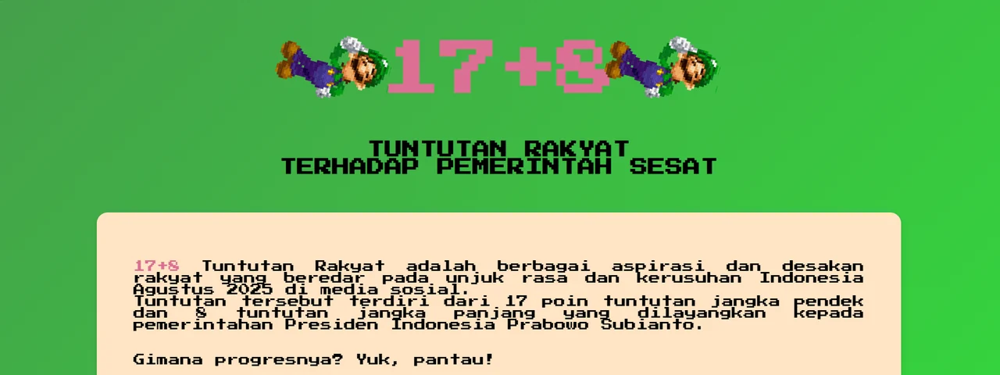

Bagian atas halaman pertama.
- 2025
- HTML
- CSS
Tugas HTML dan CSS: dua halaman web yang menyajikan daftar "17+8 Tuntutan Rakyat" yang beredar di media sosial pada Agustus 2025, lengkap dengan kolom status tiap poin, dengan gaya visual pixel.
Isi halaman
- Halaman 1: penjelasan singkat tentang 17+8, lalu tabel 17 tuntutan jangka pendek (#1 sampai #17) dengan status masing-masing.
- Halaman 2: tabel 8 tuntutan jangka panjang (#17+1 sampai #17+8), keterangan asal warna Brave Pink dan Hero Green, daftar alasan mengapa tuntutan ini dianggap perlu, dan tampilan kode CSS yang dipakai.
Isi tuntutan ditulis sebagaimana tertera di halamannya (merujuk pada tuntutan yang beredar di media sosial); project ini berfokus pada penyajiannya sebagai halaman web.
Yang dipelajari
- Struktur dokumen HTML: heading, paragraf, tabel, daftar, tautan, dan gambar.
- CSS: gradasi latar, kartu dengan bayangan dan sudut membulat, tabel bergaya, tata letak dengan flexbox.
- Font pixel Press Start 2P dari Google Fonts.
- Animasi CSS (@keyframes) untuk memutar GIF, serta efek transisi saat tombol di-hover.
- Dua halaman dengan tema warna berbeda (hijau dan pink) yang saling terhubung lewat tombol.
Menjalankan
Buka tugas1.html di browser. Tidak perlu server atau instalasi apa pun.